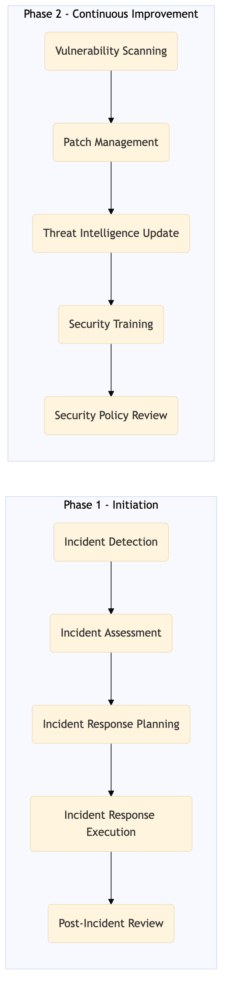

This process document outlines the cybersecurity operations and threat management procedures for Expedia Group's OTA and TMC systems, ensuring robust protection against cyber threats.
| Trigger | Detection of a potential security incident or scheduled cybersecurity review. |
| Outcome | Effective response to detected threats, mitigation of vulnerabilities, and continuous improvement of cybersecurity measures. |
| Systems | SIEM (Security Information and Event Management) Threat Intelligence Platform Incident Response Plan (IRP) Affected systems Incident Management System Vulnerability Scanner Patch Management Tool Learning Management System Policy Management System |

Click to enlarge
| Step | Name & Pain Point | Role | System | Input | Output | KPI | Flags |
|---|---|---|---|---|---|---|---|
| 1.1 | Incident Detection False positives leading to unnecessary investigations | Security Analyst | SIEM (Security Information and Event Management) | Logs from various systems | Alerts for potential security incidents | Time to detect an incident < 10 minutes | ◆ Decision |
| 1.2 | Incident Assessment Lack of comprehensive threat intelligence | Security Analyst | Threat Intelligence Platform | Alert details | Assessment report with threat severity and potential impact | Time to assess an incident < 30 minutes | ◆ Decision |
| 1.3 | Incident Response Planning Inconsistent response strategies | Security Manager | Incident Response Plan (IRP) | Assessment report | Response plan with mitigation steps | Time to develop a response plan < 1 hour | ◆ Decision |
| 1.4 | Incident Response Execution Resource allocation during high-severity incidents | Security Team | Affected systems | Response plan | Mitigation actions taken | Time to execute response < 2 hours | ◆ Decision |
| 1.5 | Post-Incident Review Insufficient documentation of incident handling | Security Analyst | Incident Management System | Response actions and outcomes | Review report with lessons learned | Time to complete review < 24 hours | ◆ Decision |
| 1.6 | Vulnerability Scanning Outdated scanning tools | Security Engineer | Vulnerability Scanner | System configurations and dependencies | List of identified vulnerabilities | Weekly scan coverage > 95% | ◆ Decision |
| 1.7 | Patch Management Manual patching errors | System Administrator | Patch Management Tool | Vulnerability list | Patched systems | Time to patch > 90% | ◆ Decision |
| 1.8 | Threat Intelligence Update Delayed threat information | Security Analyst | Threat Intelligence Platform | New threat data | Updated threat intelligence database | Daily update frequency | ◆ Decision |
| 1.9 | Security Training Low employee engagement in training | Training Coordinator | Learning Management System | Employee list | Trained employees | Annual training completion rate > 80% | ◆ Decision |
| 1.10 | Security Policy Review Outdated or non-compliant policies | Legal and Compliance Officer | Policy Management System | Current policies | Updated security policies | Annual policy review cycle | ◆ Decision |